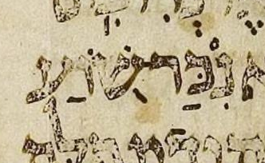
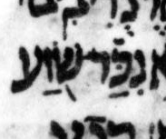

{kind=link}

| נִּכַּר־ נִכַּר־ |
34:19 | נ has דגש in μL, says BHL and DM but not BHQ |
The possible דגש is faint. The adjacent דגש (on כ) and other nearby marks are quite clear, casting suspicion on the legitimacy of this דגש.
BHQ has no דגש here. I happen to think that this is the best transcription of μL here, but I don’t know whether BHQ arrived at this transcription on purpose or by accident. Did the editors of BHQ consider, but ultimately decide against, the faint possible דגש? Or did they simply ignore μL entirely, supplying the consensus pointing, which has no דגש?
Since BHQ does not note any uncertainty in its transcription here, it is hard to distinguish whether BHQ has ignored the mark in question on purpose or by accident.
More broadly, BHQ Job never notes any uncertainty in its transcription of μL. This may mislead many readers. Despite the fact that high-resolution, color images of μL are now widely available, many readers will not engage with those images enough to understand how often there is great uncertainty in transcribing μL. And, even if the reader understands that such uncertainty exists in general, BHQ should, in my opinion, indicate to the reader the specific cases where its transcription is particularly uncertain.
U — M — μL (page 406B, col 2, line -2 (2 counting from bottom of column)):
μA (Aleppo) (page 279r, col 1, line 22, word 7):

μY (Cambridge 1753) (page 82B, col 1, line 15, word 7):
